Famous Tourist Spots
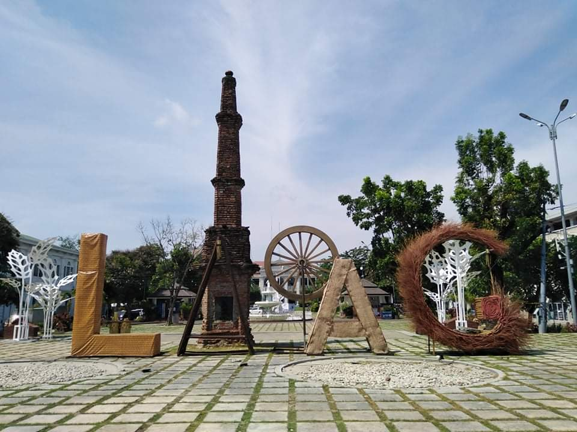
Laoag City
Laoag City, which was then the biggest center of population, was made the capital of Ilocos Norte." Though
Laoag was
converted into a city in 1965 through a plebiscite, leaving its municipal status, it remained the capital of
Ilocos
Norte. The first city mayor was Eulalio F. Siazon.
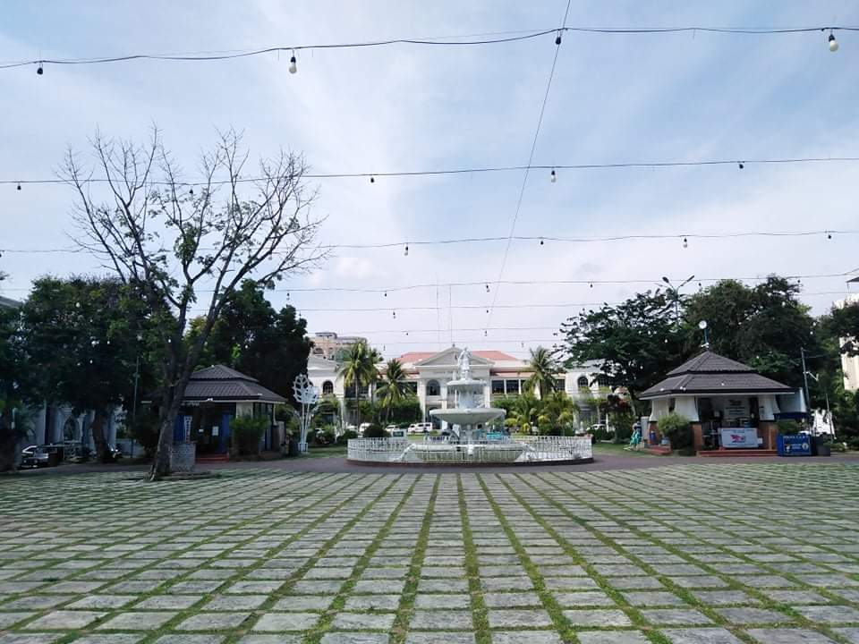
Aurora Park
Aurora Park is situated at the center surrounded by the St. William Cathedral Church, Laoag City Hall, Marcos
Hall of
Justice, Ilocos Norte Provincial Capitol and the Sinking Bell Tower. Laoag City, which was then the biggest
center of
population, was made the capital of Ilocos Norte.
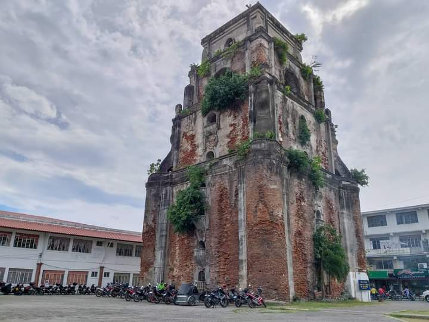
Bell Tower
The bell tower was presumably built after the 1707 earthquake. It has withstood several minor earthquakes since
completion, thus earning membership to the “Earthquake Baroque” style label by architecture scholars, along with
several
churches across the Philippines and Guatemala
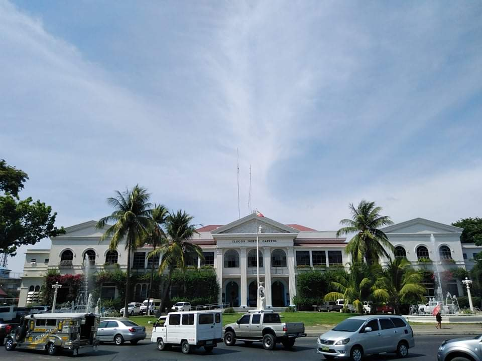
Ilocos Norte Capitol
Established in 1918, the provincial capitol serves as the seat of the government of Ilocos Norte and
continually brings
quality services and assistance to the Ilokanos.
With rich story of Ilokano, the capitol building speaks of imperial dominance as
its style is greatly inspired by American colonial structures.
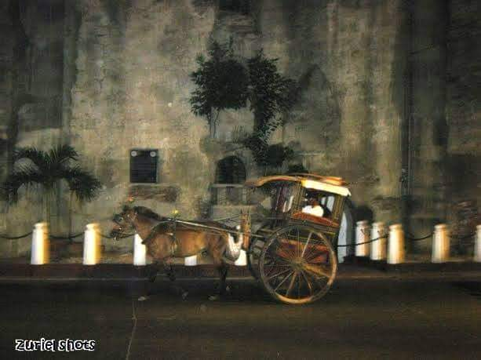
Kalesa
The Kalesa is a horse-drawn box-like carriage on two wheels. It has been around since the Spanish times in the
Philippines. The Ilocos Norte kalesa differs from its cousins in other parts of the country in that two pairs of
passengers sit opposite each other, face to face.
Delicacies
"Pinakbet"
Location: La preciousa
What is Pakbet?
PINAKBET (pinakebbet) is the Ilocano word for " shriveled or shrunk." The word has been applied to the dish
because the
vegetables, after simmering in the diluted fish paste, shrivel and shrink. Certainly there are versions of the
dish in
other provinces but the Ilocano variety is acknowledged to be the original.

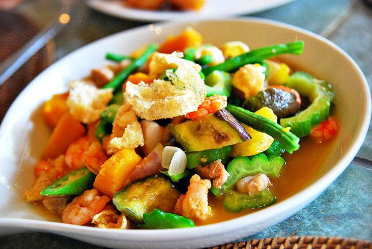
Ingredients
Bitter Melon
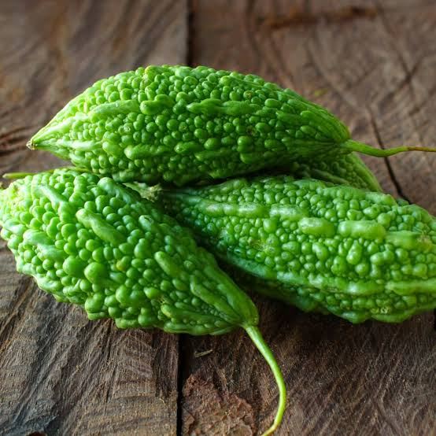
Okra
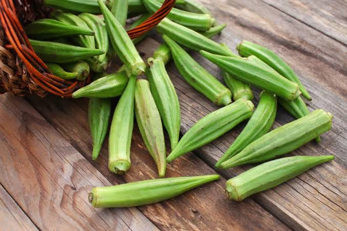
Green Beans

Pork
Garlic
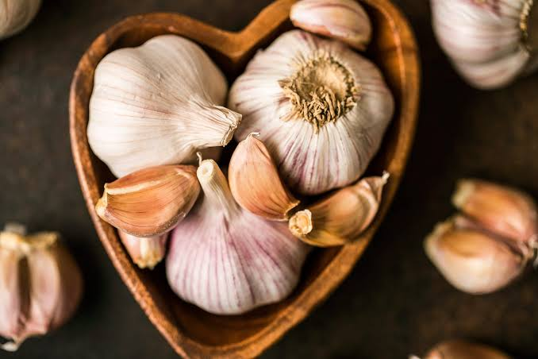
Onion
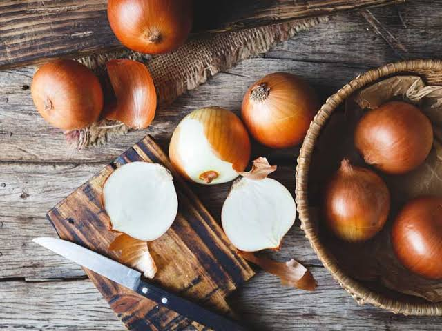
Aubergine
Shrimp Paste

Tomato
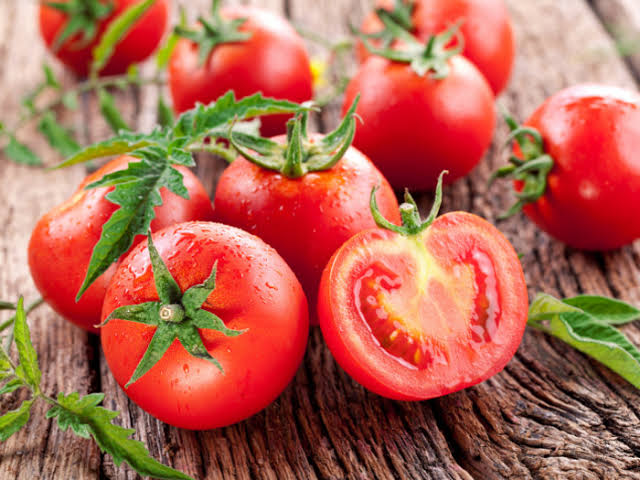
Salt
Ginger
Yardlong Bean
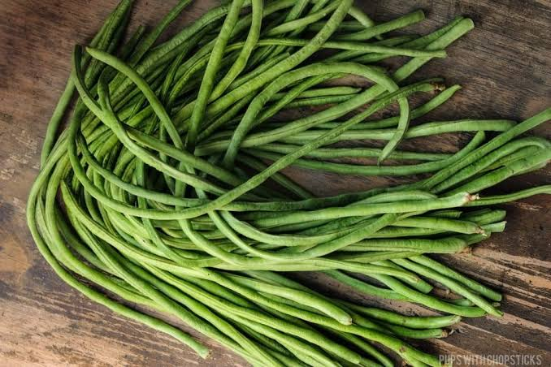
Recipe
Heat the oil in a large pot over medium heat; cook and stir the onion and garlic in the hot oil until tender,
about 5
minutes. Stir in the pork and cook until completely browned, 5 to 7 minutes. Stir the shrimp into the mixture;
season
with salt and pepper. Continue cooking until the shrimp turn pink, about 5 minutes. Add the tomato to the pot,
cover,
and let cook 5 minutes. Stir the okra, green beans, eggplant, and bitter melon into the mixture; cover, and cook
until
the vegetables are all soft to the touch, about 10 minutes more. Serve hot.